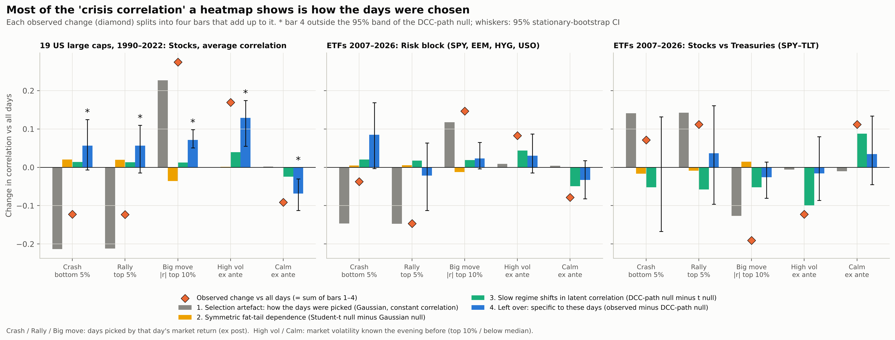
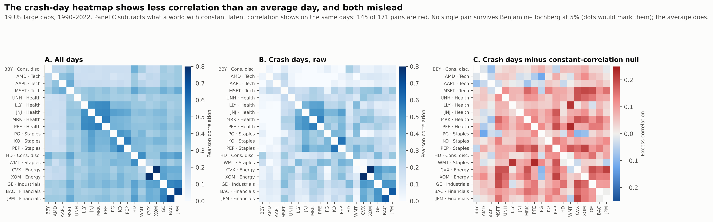
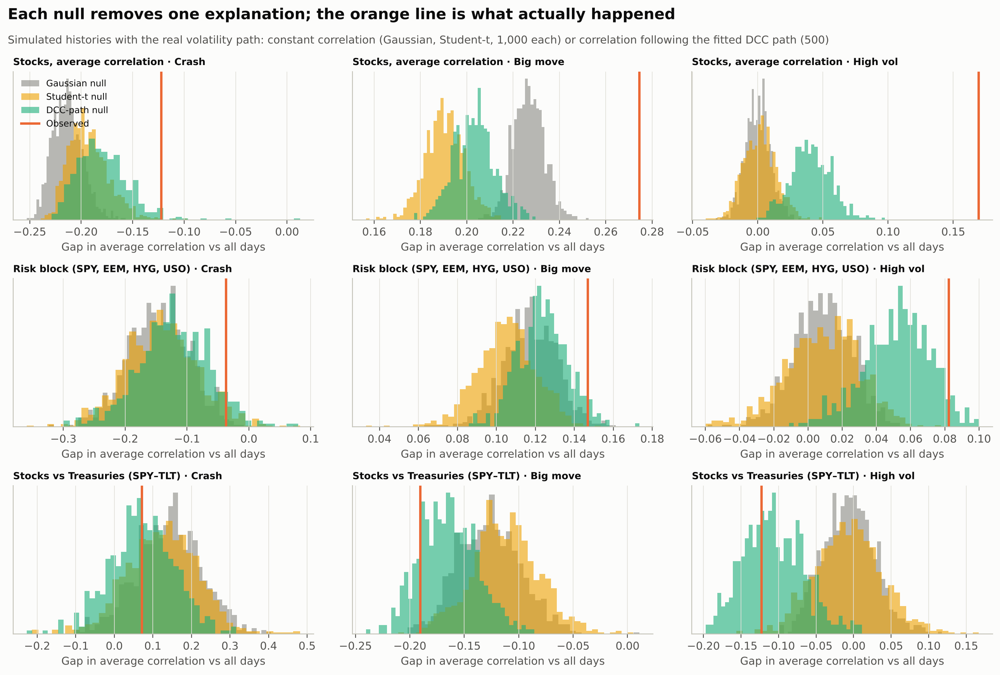
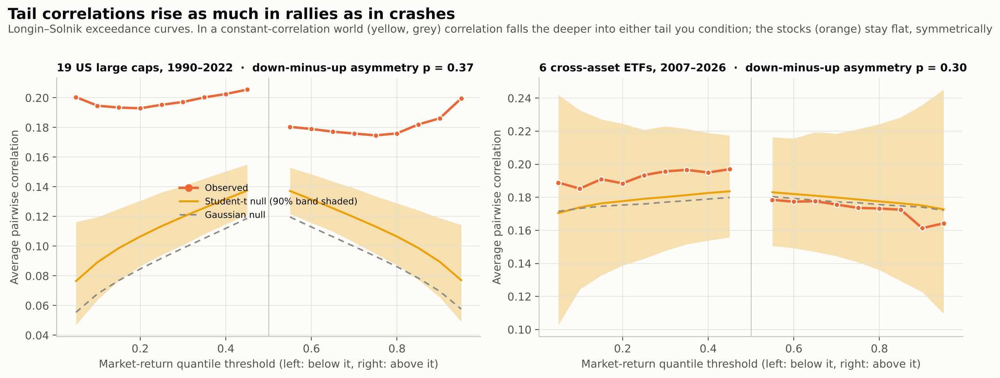
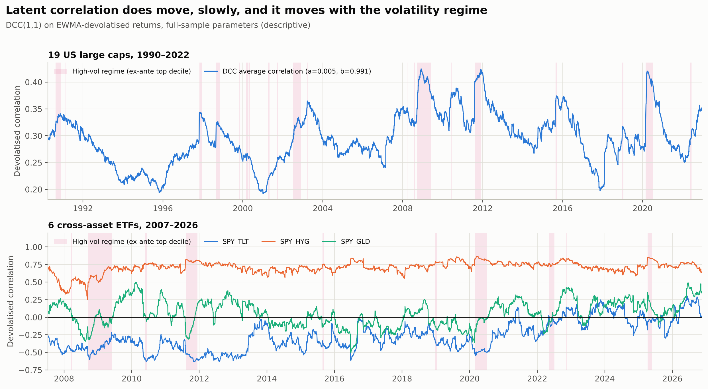
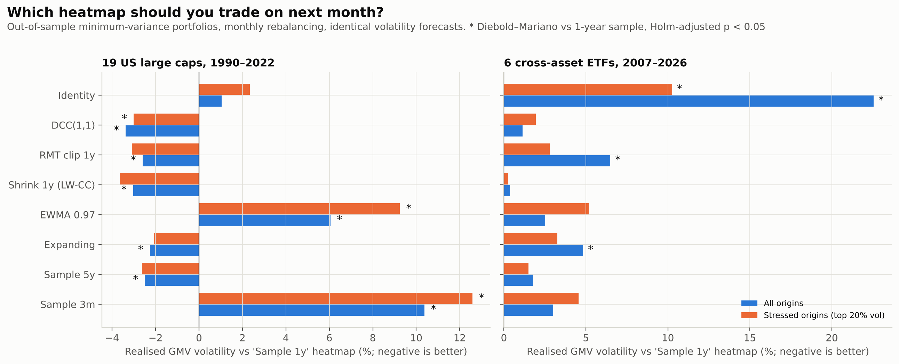

Working paper · Project 08
Separating how the days were chosen from what the market did, in 33 years of correlation heatmaps
Project 08 of 30 Quant Research Projects · Working paper, November 2026

"In a crisis, all correlations go to one" is one of the most repeated sentences in risk management. The usual evidence is a correlation heatmap drawn on crash days next to one drawn on normal days. That comparison is biased. Correlation measured on a subset of days depends on how the subset was picked, even if nothing about the market's dependence structure changes (Boyer, Gibson & Loretan, 1999; Forbes & Rigobon, 2002). This project asks: once the mechanical effects of conditioning are removed, how much of the crisis rise in correlation is real, and is it specific to crashes?
I build three counterfactual worlds that keep each asset's actual volatility path and change only the dependence: constant correlation with Gaussian shocks, constant correlation with Student-t shocks (symmetric tail dependence), and correlation that follows its fitted DCC path (slow regimes). Every conditioning rule is re-applied inside 1,000 simulated histories per world (500 for the DCC world). The observed change in correlation then splits into four additive parts: selection artefact, fat-tail dependence, slow regime shifts, and a remainder specific to the chosen days. Universes: 19 US large caps (1990–2022, 8,249 days) and six cross-asset ETFs (2007–2026, 4,873 days). A second part asks the practical question: which correlation estimate should you use for next month?
Main findings
Correlation heatmaps are the most common first picture in a quant notebook, and conditional heatmaps ("what does it look like in a sell-off?") are the most common second one. The answer drives real decisions: diversification assumptions, stress tests, the amount of capital set aside for crises, and whether bonds will hedge equities when they are needed.
The statistical problem is old but rarely respected in practice. Correlation is a ratio of covariance to the product of standard deviations, and the selection of observations changes both. Select on a large absolute market move and you inflate the variance of the common factor, so correlation rises mechanically. Select on one tail of the market and you truncate it, so correlation falls mechanically. Forbes & Rigobon (2002) showed the first effect for international stock-market contagion. Boyer, Gibson & Loretan (1999) and Longin & Solnik (2001) showed that even the Gaussian distribution produces exceedance correlations that fall towards zero in the tails. Ang & Chen (2002) and Hong, Tu & Zhou (2007) report that the drop is smaller on the downside, which became the "asymmetric correlation" stylised fact.
What I have not seen is a decomposition that (i) keeps each asset's real volatility path instead of assuming i.i.d. returns, (ii) separates fat-tail dependence from slow correlation regimes, and (iii) reports the result as the four pieces a practitioner actually needs: how much of my conditional heatmap is the way I picked the days, how much is fat tails, how much is a regime I could have seen coming, and how much is specific to these days? That is the contribution here, together with an out-of-sample test of which heatmap to use going forward.
| Universe | Assets | Period | Days | Source |
|---|---|---|---|---|
| US large caps | AAPL, AMD, BAC, BBY, CVX, GE, HD, JNJ, JPM, KO, LLY, MRK, MSFT, PEP, PFE, PG, UNH, WMT, XOM (9 sectors) | Apr 1990 – Dec 2022 | 8,249 | Adjusted closes shipped with skfolio |
| Cross-asset ETFs | SPY, EEM, TLT, HYG, GLD, USO | Jul 2007 – Nov 2026 | 4,873 | Yahoo Finance adjusted closes (project 01) |
Daily log returns. The first 63 days of each universe are a volatility warm-up and are never evaluated.
Each asset's ex-ante volatility σi,t is a RiskMetrics EWMA (λ = 0.94) using returns up to t−1, floored at 0.2% a day. Devolatised returns are zi,t = ri,t / σi,t. The "market" is the equal-weight portfolio of the 19 stocks, and SPY for the ETFs.
| Rule | Days selected | What it imitates |
|---|---|---|
| Crash days | market return in its bottom 5% | "the heatmap in a sell-off" |
| Rally days | market return in its top 5% | the mirror image, rarely drawn |
| Big-move days | |market return| in its top 10% | "volatile days" chosen ex post |
| High-vol regime | market's ex-ante EWMA vol in its top 10% | a regime known the evening before |
| Calm regime | market's ex-ante vol below its median | the comparison regime |
The statistic is the change in average pairwise correlation (Fisher-z averaged) between the selected days and all days, computed on raw returns, exactly as a heatmap would be. For the ETFs, the six-asset average mixes risk assets and hedges whose correlations move in opposite directions, so I also test the risk block (SPY, EEM, HYG, USO) and the SPY–TLT and SPY–GLD pairs.
All three null worlds generate rt = σt ⊙ zt with the real σt path, then recompute the market, re-apply every rule and recompute the statistic.
| World | zt | B | Removes |
|---|---|---|---|
| Gaussian null | N(0, R̄), R̄ = full-sample correlation of z | 1,000 | pure selection effect |
| Student-t null | multivariate tν(0, R̄), ν by profile MLE (6.75 stocks, 7.25 ETFs) | 1,000 | + symmetric tail dependence |
| DCC-path null | tν(0, Rt), Rt the fitted DCC(1,1) path | 500 | + slow regime shifts |
| Observed | the data |
Observed gap G = selection E[G│Gauss] + tail dependence (E[G│t] − E[G│Gauss]) + regime (E[G│DCC] − E[G│t]) + day-specific remainder (G − E[G│DCC]).
Inference: one-sided Monte Carlo p-values of the observed gap against each null; 95% confidence intervals for G from a stationary bootstrap of days (mean block 21, 1,000 replications, rules recomputed in each replication). Pair-level tests (171 stock pairs, 15 ETF pairs) use Benjamini–Hochberg. The asymmetry test compares down-tail and up-tail exceedance correlation at the 10% threshold against the t-null.
Every 21 trading days after a five-year burn-in (332 origins for stocks from 1995, 172 for ETFs from 2012), nine estimators forecast the correlation of the next 21 devolatised returns: rolling samples (3 months, 1 year, 5 years, expanding), EWMA (λ = 0.97), Ledoit–Wolf (2004) shrinkage to constant correlation on 1 year, random-matrix eigenvalue clipping (Laloux et al., 1999) on 1 year, DCC(1,1) (Engle, 2002; re-estimated every year on an expanding window, mean-reverting 21-day forecast) and the identity. All share the same ex-ante volatilities, so only the correlation differs. Losses: realised variance of the global minimum-variance portfolio (economic) and the Gaussian log score of the next month's z (statistical, proper). Diebold–Mariano tests against the 1-year sample with Newey–West errors, Holm-adjusted across the eight comparisons.

Panel B is the picture people draw to show that "correlations go to one". It shows the opposite: correlations are lower on crash days for 157 of 171 pairs. Panel C removes what a constant-correlation world shows on the same days. 145 of 171 pairs are then positive, with a median excess of +0.07. No single pair survives Benjamini–Hochberg at 5% (smallest q = 0.085, LLY–WMT). The evidence is in the cross-section, not in any one cell. A heatmap that colours individual cells as "contagion" is over-reading noise.
| Universe · block | Rule | Observed | Selection | Fat tails | Regime | Day-specific | p vs DCC null |
|---|---|---|---|---|---|---|---|
| Stocks · average | Crash days | −0.122 | −0.213 | +0.020 | +0.014 | +0.057 | 0.022 |
| Stocks · average | Rally days | −0.123 | −0.212 | +0.019 | +0.013 | +0.056 | 0.024 |
| Stocks · average | Big-move days | +0.275 | +0.227 | −0.036 | +0.013 | +0.071 | 0.002 |
| Stocks · average | High-vol regime | +0.170 | +0.000 | +0.001 | +0.039 | +0.129 | 0.002 |
| Stocks · average | Calm regime | −0.091 | +0.002 | −0.000 | −0.024 | −0.068 | 0.002 (lower) |
| ETFs · risk block | Crash days | −0.037 | −0.146 | +0.005 | +0.020 | +0.085 | 0.068 |
| ETFs · risk block | High-vol regime | +0.082 | +0.009 | −0.000 | +0.044 | +0.030 | 0.048 |
| ETFs · SPY–TLT | Crash days | +0.071 | +0.141 | −0.017 | −0.052 | −0.001 | 0.50 |
| ETFs · SPY–TLT | High-vol regime | −0.123 | −0.006 | −0.001 | −0.100 | −0.016 | 0.37 (lower) |
Full table with bootstrap intervals for every block and rule: results/gap_decomposition.csv.
Four things stand out.


In a constant-correlation world, exceedance correlation falls the deeper into either tail you condition (yellow and grey). The stocks stay flat at about 0.18–0.20 in both directions. They are clearly above the null on both sides, and the down-tail minus up-tail difference at 10% is +0.008 (t-null 95th percentile 0.038, p = 0.37). The ETFs sit inside the null band throughout (asymmetry p = 0.30). Over 1990–2026, what earlier studies called "asymmetric correlation" looks like symmetric excess correlation in extreme markets on top of a large mechanical effect, and not like a downside-only phenomenon. Section 7 discusses why this differs from Ang & Chen (2002).

The fitted DCC parameters are a = 0.005, b = 0.991 for stocks (half-life about 155 days) and a = 0.017, b = 0.977 for the ETFs (about 123 days). Average devolatised stock correlation ranges from 0.19 (1996, 2000, 2017) to 0.42 (late 2008, 2011, March 2020). The stock–bond correlation was negative for almost the whole sample, reached −0.6 in 2008–2012, and crossed into positive territory in 2022–23.
| Window | Universe · block | Pre-window year | Window (raw) | Window (devolatised) | Devolatised change |
|---|---|---|---|---|---|
| LTCM/Russia, Aug–Oct 1998 | Stocks | 0.32 | 0.43 | 0.46 | +0.14 |
| GFC, Sep 2008 – Mar 2009 | Stocks | 0.37 | 0.62 | 0.60 | +0.23 |
| GFC | ETF risk block | 0.32 | 0.65 | 0.64 | +0.32 |
| GFC | SPY–TLT | −0.51 | −0.44 | −0.51 | +0.01 |
| Euro/US downgrade, Aug–Oct 2011 | Stocks | 0.35 | 0.73 | 0.73 | +0.37 |
| COVID, 20 Feb – 30 Apr 2020 | Stocks | 0.26 | 0.75 | 0.77 | +0.51 |
| COVID | ETF risk block | 0.56 | 0.69 | 0.78 | +0.22 |
| 2022 rate shock, Jan–Oct 2022 | Stocks | 0.23 | 0.41 | 0.39 | +0.16 |
| 2022 rate shock | SPY–TLT | −0.13 | +0.03 | +0.02 | +0.16 |
Calendar windows are not selected on the returns inside them, so raw and devolatised numbers agree and the selection artefact is not an issue. In these windows correlations really do rise, by a lot. The point of this paper is not that crisis correlation is a myth. It is that the crash-day heatmap is the wrong instrument to see it, and that the rise belongs to the crisis period, not to the down days.
| Period | Crash-day excess vs t-null | p | High-vol regime excess | p |
|---|---|---|---|---|
| 1990–2006 | +0.008 | 0.28 | +0.089 | 0.003 |
| 2007–2022 | +0.124 | 0.007 | +0.167 | 0.003 |
The crash-day excess is entirely a post-2007 phenomenon in this sample. The regime effect is present in
both halves and doubles in the second. (results/subperiod_decomposition.csv; 300 draws per null.)

| Estimator | Stocks: GMV vol vs 1y sample | Holm p | Stocks, stressed months | ETFs: GMV vol vs 1y | Holm p |
|---|---|---|---|---|---|
| Sample 3 months | +10.4% | <0.001 | +12.6% | +3.0% | 0.71 |
| Sample 1 year (baseline) | 16.5% p.a. | 25.5% p.a. | 6.0% p.a. | ||
| Sample 5 years | −2.5% | 0.005 | −2.6% | +1.8% | 0.34 |
| Expanding | −2.3% | 0.005 | −2.1% | +4.8% | 0.002 |
| EWMA 0.97 | +6.1% | 0.006 | +9.2% | +2.5% | 0.82 |
| Shrink 1y (Ledoit–Wolf CC) | −3.0% | 0.004 | −3.7% | +0.4% | 0.66 |
| RMT clip 1y | −2.6% | 0.028 | −3.1% | +6.5% | <0.001 |
| DCC(1,1) | −3.4% | <0.001 | −3.0% | +1.1% | 0.82 |
| Identity | +1.0% | 0.60 | +2.3% | +22.5% | <0.001 |
The log score gives the same ranking for stocks (DCC best, then 5-year sample and shrinkage; 3-month
sample and EWMA far worse; all Holm p < 0.03). In the crisis windows of §4.5 (results/stress_forecast.csv),
shrinkage and DCC beat the 1-year sample in every stock episode (by 2–6% and 0.5–4.5%), while the 3-month
sample loses in every one (by 4–21%).
The intuition follows directly from part A. Latent correlation moves on a half-life of months, so a 3-month window mostly adds estimation noise. 19 assets and 252 days leave a lot of noise in a 1-year sample, and shrinkage or a slow DCC removes it. Reacting fast to "crisis correlation" means reacting to the noisiest estimate at the worst time. With six assets, the noise problem is small and the 1-year sample is already hard to beat.
I reviewed the first complete draft as a hostile referee would. Changes made:
pip install -r requirements.txt
./run_all.sh # data, 10 unit tests, both studies, stress windows, figures (~20 min on 4 cores)
Seeds are fixed. Every number above is in results/. Unit tests (tests/test_core.py) check that the
volatility filter never looks ahead, that the simulators reproduce their target correlation and
degrees of freedom, that one-tail conditioning lowers and two-tail conditioning raises Gaussian
correlation, that shrinkage and clipping return valid correlation matrices, that DCC recovers known
parameters, and the multiple-testing adjustments.
| File | Content |
|---|---|
src/core.py |
EWMA vol, null simulators, ν MLE, DCC, Ledoit–Wolf CC, RMT clipping, HAC/DM, Holm, BH |
src/conditioning.py |
part A: rules, three nulls, bootstrap, decomposition, exceedance curves, pairs |
src/forecast.py |
part B: nine estimators, GMV and log-score losses, DM tests |
src/stress.py |
named stress windows |
src/figures.py |
all figures |
Ang, A. & Chen, J. (2002). Asymmetric correlations of equity portfolios. Journal of Financial Economics 63, 443–494. Boyer, B., Gibson, M. & Loretan, M. (1999). Pitfalls in tests for changes in correlations. Federal Reserve IFDP 597. Engle, R. (2002). Dynamic conditional correlation. Journal of Business & Economic Statistics 20, 339–350. Forbes, K. & Rigobon, R. (2002). No contagion, only interdependence. Journal of Finance 57, 2223–2261. Hong, Y., Tu, J. & Zhou, G. (2007). Asymmetries in stock returns: statistical tests and economic evaluation. Review of Financial Studies 20, 1547–1581. Laloux, L., Cizeau, P., Bouchaud, J.-P. & Potters, M. (1999). Noise dressing of financial correlation matrices. Physical Review Letters 83, 1467. Ledoit, O. & Wolf, M. (2004). Honey, I shrunk the sample covariance matrix. Journal of Portfolio Management 30, 110–119. Longin, F. & Solnik, B. (2001). Extreme correlation of international equity markets. Journal of Finance 56, 649–676. Politis, D. & Romano, J. (1994). The stationary bootstrap. JASA 89, 1303–1313.
Figure notes. Colours follow the shared palette of this series: grey for the selection artefact, yellow for fat-tail dependence, green for regimes, blue for what is left, orange for observed values. Diverging maps are centred at zero.